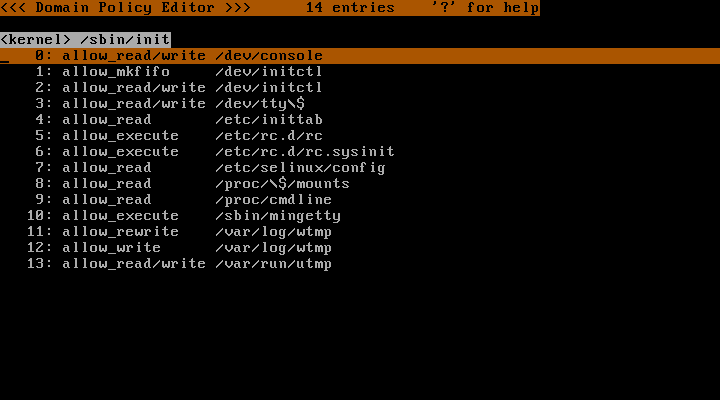

Last modified: $Date$
このページは TOMOYO Linux の導入手順と体験手順を説明しています。.
カーネルのソースを linux-next git tree からダウンロードして展開してください。
$ wget -O linux-next.tar.gz 'http://git.kernel.org/?p=linux/kernel/git/sfr/linux-next.git;a=snapshot;h=d6b658ce7a3b0a5b278770dc031ee2587e4419dd' $ tar -zxf linux-next.tar.gz $ cd linux/kernel/git/sfr/linux-next.git/
次に、 TOMOYO Linux を有効にしたカーネルコンフィグを作成します。
$ make -s menuconfig
Security options の画面に移動して、以下のように Enable different security models と TOMOYO Linux Support を選択してください。
[ ] Enable access key retention support [*] Enable different security models -*- Enable the securityfs filesystem [ ] Socket and Networking Security Hooks -*- Security hooks for pathname based access control [ ] File POSIX Capabilities (0) Low address space to protect from user allocation [*] TOMOYO Linux Support
カーネルコンフィグの作成が終わったら、カーネルをコンパイルしてください。
$ make -s # make -s modules_install install
必要であれば initrd を作成してください。
security=tomoyo というパラメータをカーネルのコマンドラインに追加するために /boot/grub/grub.conf または /boot/grub/menu.lst を編集してください。
ツールのソースを SourceForge.jp の TOMOYO プロジェクト からダウンロードし、展開およびコンパイルしてください。
$ wget http://osdn.dl.sourceforge.jp/tomoyo/30298/ccs-tools-1.6.6-20090202.tar.gz $ tar -zxf ccs-tools-1.6.6-20090202.tar.gz $ cd ccstools $ make # make install
基本設定を自動でおこなうスクリプト tomoyo_init_policy.sh がツール群には含まれていますので、これを実行します。
# /usr/lib/ccs/tomoyo_init_policy.sh
これで、 /etc/tomoyo/ ディレクトリに基本的な設定が生成されます。
以上の設定でTOMOYO Linuxを使用できる状態になっていますが、このチュートリアルではさらに、システム全体の挙動を学習させる設定を行っておきます。
# echo '<kernel>' > /etc/tomoyo/domain_policy.conf # echo 'use_profile 1' >> /etc/tomoyo/domain_policy.conf
TOMOYO Linux カーネルで起動して、ログインしてrootユーザになり、TOMOYO Linuxツール群に同梱されているccs-editpolicyコマンドを実行してみてください。
# /usr/sbin/ccs-editpolicy

ccs-editpolicyコマンドはTOMOYO Linuxのポリシーを閲覧、編集するためのCUIのツールです。起動した直後は現在までに生成されたドメインが表示されています。<kernel>を基点として、execveによるプロセスの起動のたびに新たなドメインが生成されています。
ドメインの左側、行番号の右側には、今すべて1という数字が表示されています。この数字は「プロファイル番号」と呼ばれる値で、ドメインが使用するプロファイルをあらわしています。プロファイルはTOMOYO Linuxのアクセス制御レベルを組にしたモノで、/etc/tomoyo/profile.confで指定した内容がLinuxの起動時に/sys/kernel/security/tomoyo/profileに読み込まれています。
tomoyo_init_policy.shによって、以下の4つのプロファイルが自動的に生成されています。プロファイルはドメインに割り当てて使用します。
適当なドメインにカーソルを移動させ、Enterキーを押すことで学習されたアクセス許可を閲覧できます。

システム起動時から学習されたポリシーを、ccs-editpolicyで適当にブラウズしてみてください。どのプログラムがどのファイルにアクセスしたかがひと目で見て取ることができます。
ccs-editpolicyの基本的な使い方はこのチュートリアルで紹介しますが、詳しい使い方は ポリシーエディタの使い方 をご覧ください。
ccs-editpolicyを終了するには[Q]を押します。
この状態ですでに、ログインシェルの動作は学習されるようになっています。ためしに以下のコマンドを入力してみてください。
# head /etc/passwd # bash # tail /etc/mtab # exit
通常のLinuxとまったく同様に動作しますが、カーネルレベルではTOMOYO Linuxがアクセスを監視してポリシーを学習しています。
ここで再度ccs-editpolicyを起動して、ログインシェル以下のドメインを強制モードにしましょう。強制モードはプロファイル番号3です。まずは以下の操作で、ログインシェル以下のドメインをマークします。
マークが終わったら、[S] [3] [Enter]でマークしたドメインにプロファイル番号3を割り当てます。ログインシェル以降のドメインの左側の数字が3に変わったのを確認したら、[Q]でccs-editpolicyを終了してください。

この状態ではすでに、先ほど学習させた操作以外は拒否されるようになっています。[Q]で ccs-editpolicy を終了し、ためしにいくつかコマンドをたたいてみてください。
# head /etc/passwd # OK # head /etc/shadow # NG # rm -fr / # NG # tail /etc/mtab # NG # bash # OK # tail /etc/mtab # OK # head /etc/passwd # NG

先ほど学習させた操作以外は拒否されることが分かります。また、tail /etc/mtabは先ほど学習させた操作には含まれていますが、1段目のシェルでは実行できず、2段目のシェルで許可されます。これは、2つのシェルはプロセスの実行履歴、すなわちドメインが異なり、学習されたアクセス許可も異なるためです。
一通りの操作を試し終えたら、ccs-editpolicyでログインシェルのプロファイルを1に戻して次のチュートリアルに進んでください。
次に、Apacheの動作を学習してポリシーを編集してみます。Apacheがインストールされていない場合はインストールしてください。
Apacheであっても基本的な流れは先ほどのログイン後のコマンドと同じです。まず、ccs-editpolicyを起動してApacheのドメインを探し、プロファイル番号1を割り当てます。
ccs-editpolicyを[Q]で終了し、Apacheを再起動して再度ccs-editpolicyを起動し、Apacheドメインで[Enter]キーを押してください。Apacheの起動に必要なアクセスが学習されているはずです。
allow_read /etc/httpd/conf/httpd.conf allow_create /var/run/httpd.pid allow_unlink /var/run/httpd.pid
設定ファイルやモジュールの読み込みに必要な許可が学習されています。学習モードにした状態でさらに、WebブラウザでこのApacheへWebコンテンツを要求してみてください。
再度ccs-editpolicyでポリシーを読み込むと、Webコンテンツの読み込みに必要な許可が学習されているはずです。
allow_read /var/www/html/index.html
Webコンテンツは全てのファイルを書き出すよりも、パターンを使ったほうが簡単にポリシーを記述できます（使用できるパターンの詳細は TOMOYO Linux ポリシー解説書 をご覧ください）。
このような柔軟なポリシーは、以下のように記述できます。
allow_read /var/www/\* allow_read /var/www/\*/\* allow_read /var/www/\*/\*/\* allow_read /var/www/\*/\*/\*/\* allow_read /var/www/\*/\*/\*/\*/\*
\*は、「/を含まない全ての文字列」をあらわします。ccs-editpolicyでエントリを追加するには、[A]を押して出る1行入力にアクセス許可の内容を入力して[Enter]キーを押します。